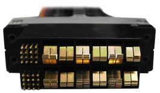
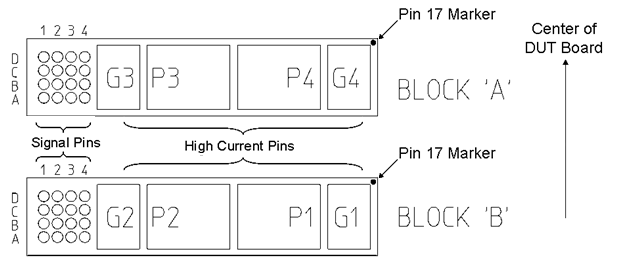

UHC4T pogo pin assignment
The DC Scale UHC4 / UHC4T power supply card requires special high power pogo pins, which have a different pad layout and different dimensions than other card types.
Pogo cable assemblies
There are two variants of pogo cables available, which enables the two pogo blocks per card to be either placed in adjacent locations or split between different locations on the DUT board.
- E8013UHP pogo cable assembly: Single pogo block unit with two
pogo blocks. The lower pogo pin (S1) is always block A; for example A=230, B=430:
- Block A must be in an S1 position.
- Block B must be in the adjacent S2 position.
The second pair of channels (Block B = Channel P1/P2) always gets assigned a pogo block number that is by 200 higher than the first pair. If the model file sets the physical pogo block number to 230, then the software automatically uses the pogo block locations 230 and 430.
- E8024UHPS pogo cable assembly: Connects the UHC4 / UHC4T channels via two separate pogo blocks A and B to the DUT. The two pogo blocks can be installed in any position on the DUT interface, within the limitation presented by the cable length.
The E8024UHPS cable is fully compatible with the E8013UHP cable when the A and B pogo blocks are installed in adjacent positions on the DUT interface. In such a case, no change to the model file is required when the E8024UHPS cable is used instead of the E8013UHP cable.
Pogo block
The figure below shows the single pogo block unit of the E8013UHP pogo cable assembly.
There is no need to cover the pogo pin block when using an old DUT board that was not designed for the UHC4 / UHC4T card.

Pogo block layout and power pin assignment
The two pogo cable assembly variants E8013UHP and E8024UHPS use the same layout and pin assignment of the pogo blocks although the two pogo blocks are combined into one unit for the E8013UHP.

High-current pins (Channel number # = 1 ... 4):
- P#
- Power line
- G#
- Ground lineNote The ground pins G1, G2, G3, and G4 are internally connected on the card and should be connected also on the DUT board.
- The channels P1 and P2 belong to block B and channels P3 and P4 belong to block A.
- The numbers run from left to right for block A while they run from right to left for block B.
Variants of the signal pins assignment
Signal pins assignment: UHC4 (HLA rev. 002) and UHC4T
| Block A | 1 | 2 | 3 | 4 | |
| D | PS3 | GND | PS4 | DUT_CAP_ON_3 | |
| C | GS3 | CMON3 | GS4 | Safety_line | |
| B | +DS03 | GND | +DS04 | Gang_out | |
| A | -DS03 | CMON4 | -DS04 | DUT_CAP_ON_4 | |
| Block B | 1 | 2 | 3 | 4 | |
| D | PS1 | GND | PS2 | DUT_CAP_ON_1 | |
| C | GS1 | CMON1 | GS2 | +5 V | |
| B | +DS01 | GND | +DS02 | Gang_in | |
| A | -DS01 | CMON2 | -DS02 | DUT_CAP_ON_2 |
Signal pins description
Note: Channel number # = 1 ... 4
- PS#
- Power sense pin
- GND
- The GND pins need to be connected to the utility line ground.
- GS#
- Ground sense pin
- +DS0# and -DS0#
- High-speed differential input. Each differential input can be sampled by a 14-bit ADC with a maximum sample rate of 10 Msps. Sampling channels within a gang chain are individually addressable and usable. Connect directly to DUT pin to be sampled.
- CMON#
- Current monitor output. The current monitor output per channel provides a voltage proportional to the output current (+4 V for a 40 A current output). The reference pin is GS#.
- Safety_line
- One "safety line" fed to the DUT board. The pin must be high or left open to
operate the card. When pulled low, the card shuts down. The pin can be used
to simultaneously shut down all UHC4 cards triggered by one of its own DPS
channels or by an external alarm switch.
Input impedance: 46.6 kΩ pullup resistor to +5 V pin Logic Zero: < 0.5 V Logic 1: > 3.5 V Input ground reference: GND (to be connected to UGND of the DUT board) - +5 V
- Input to connect +5 V from DUT board. If not applied, the card shuts down.
Can be used to detect not properly connected or not assembled DUT board. We
recommend connecting a +5 V utility power supply to this input and the
utility ground UGND to the GND pin.
Input impedance: ~ 1 kΩ Voltage level: 5 V ±10 % Input ground reference: GND (to be connected to UGND of the DUT board) - Gang_out
- Output to connect on DUT board to the Gang_in input of the next card to be ganged.
- Gang_in
- Input to connect on DUT board to the Gang_out output of the previous card to be ganged. A card with no connection at Gang_in is either the master of a gang chain of multiple cards, or working as a stand-alone card (Note that also within a card you can gang the four channels).
- SPARE# ("HLA Rev. 001" only)
- unused pins
- DUT_CAP_ON_# (UHC4 "HLA Rev. 002" or higher or UHC4T)
- The pin can be used to switch the big decoupling- or
bypass capacitors on the DUT board on or off. In the 40 A range the signal
level is 0 V; in the 1.5 A range the signal level is 5 V (referenced to
power ground).
The pin is an open drain output that is shorted to GND in the 40 A range. In the 1.5 A range, the signal level is pulled up to 5 V by an internal 230 Ω resistor. A serial resistor of about 105 Ω limits the output current. For more information, refer to appendix "A1) DUT_CAP_ON#" of application paper Stability of ATE supplies with different ATE test fixtures - UHC4 Stability and special features.
Assignment of UHC4 / UHC4T power channels to Tester Channels
The DC Scale UHC4 / UHC4T features four channels that are routed two physical pogo blocks. SmarTest assign the four channels on the physical blocks to the Tester Channels. For more information, refer to section Assignment of UHC4T power channels in UHC4T specific setup tasks.
Functional changes
- Introduced in SmarTest 6.5.0
- SmarTest 6.5.3: DUT_CAP_ON_n pin for HLA Rev.002.